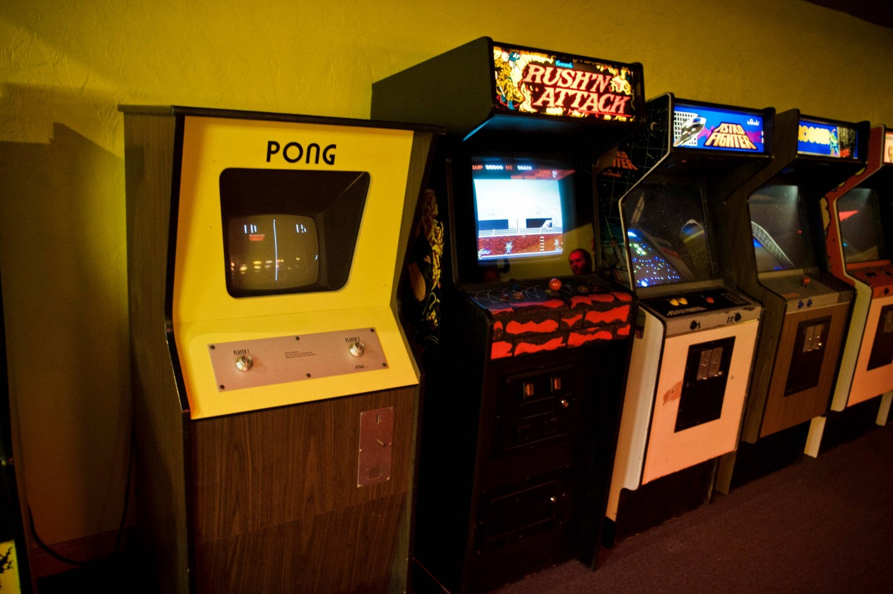
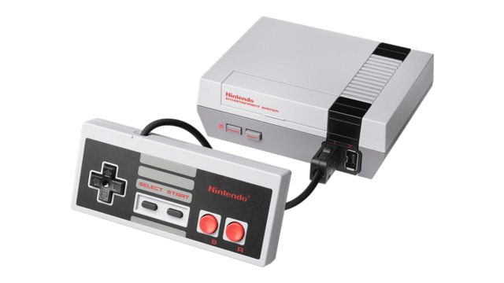
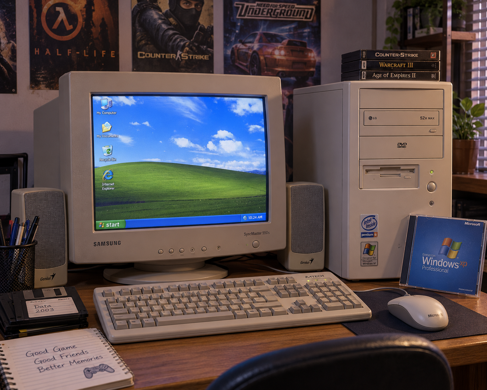
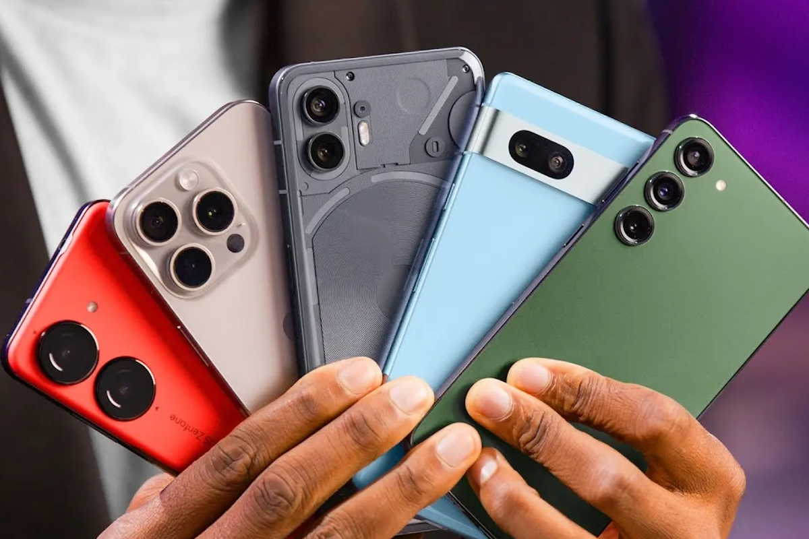

DARI MESIN KOIN KE DUNIA VIRTUAL
Lebih dari empat dekade perjalanan video game — ikuti garis waktunya dan lihat bagaimana hobi sederhana berubah menjadi industri hiburan terbesar di dunia.
ERA ARCADE AWAL
Semuanya dimulai dari mesin arcade. Pong (1972) membuktikan video game bisa dicintai publik, lalu Space Invaders (1978) memicu demam arcade di seluruh dunia. Mesin koin menjadi gerbang pertama jutaan orang mengenal game.


ERA KONSOL RUMAHAN
Game masuk ke ruang keluarga. NES, Sega Genesis, hingga PlayStation generasi pertama melahirkan franchise ikonik seperti Mario, Zelda, Sonic, dan Final Fantasy — era keemasan yang membentuk identitas industri game modern.
ERA PC & GAME ONLINE
Internet mengubah cara bermain. Warnet dipenuhi pemain Counter-Strike dan Ragnarok Online, MMORPG menghubungkan jutaan pemain dalam satu dunia, dan komunitas gaming pertama kali terbentuk secara global.


ERA MODERN & MOBILE
Game menjadi gaya hidup. Smartphone membawa game ke saku semua orang, esports memenuhi stadion, streaming melahirkan bintang baru, dan VR/AR serta cloud gaming terus mendorong batas imajinasi.